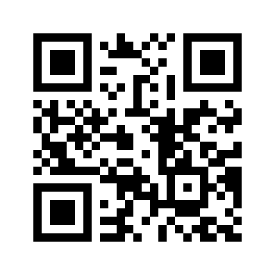

1. Install Expo Go from the App Store / Play Store.
2. Make sure your phone is on the same Wi-Fi network as this computer.
3. Scan this QR with your phone camera (iOS) or the Expo Go app (Android):

Or type this URL manually in Expo Go → "Enter URL manually":
exp://172.20.26.199:8081
If scanning/connecting fails (different network or VPN), run
npx expo start --tunnel in the healthai-triage folder and scan the new QR instead.